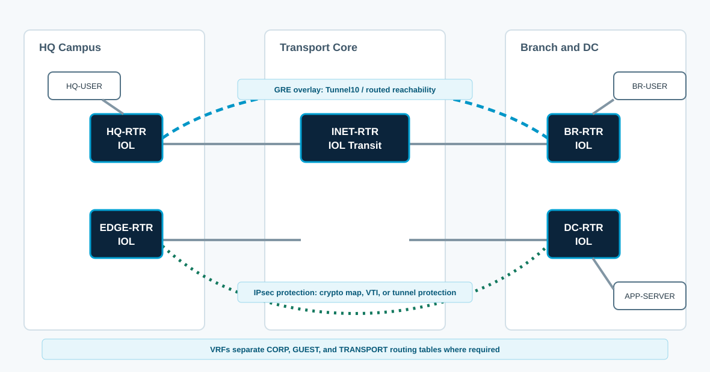

Overview
This lab combines ENCOR 2.2.b GRE and IPsec. You will carry routed traffic over GRE and protect that GRE traffic with IPsec. The goal is to distinguish overlay reachability from encryption state.
Topology

Task 1: Establish Plain GRE
Build Tunnel10 first without IPsec. This separates routing and encapsulation problems from crypto problems.
HQ-RTR
enable
terminal length 0
show ip route 198.51.100.6
show ip route 0.0.0.0
ping 198.51.100.6 source Ethernet0/0
!
configure terminal
interface Tunnel10
description GRE overlay to BR-RTR
ip address 172.16.10.1 255.255.255.252
tunnel source Ethernet0/0
tunnel destination 198.51.100.6
tunnel mode gre ip
no shutdown
!
ip route 10.60.0.0 255.255.255.0 Tunnel10
end
show interface Tunnel10
show ip route 10.60.0.0BR-RTR
enable
terminal length 0
show ip route 198.51.100.2
show ip route 0.0.0.0
ping 198.51.100.2 source Ethernet0/0
!
configure terminal
interface Tunnel10
description GRE overlay to HQ-RTR
ip address 172.16.10.2 255.255.255.252
tunnel source Ethernet0/0
tunnel destination 198.51.100.2
tunnel mode gre ip
no shutdown
!
ip route 10.10.0.0 255.255.255.0 Tunnel10
end
show interface Tunnel10
show ip route 10.10.0.0
ping 172.16.10.1 source 172.16.10.2CML note: On this IOL-XE image, the temporary GRE static route installed reliably as an interface-only route. The Tunnel10 172.16.10.x form remained in running-config but did not install in the routing table during validation.
Task 2: Protect GRE with IPsec
Apply an IPsec profile directly to the GRE tunnel. This protects tunnel packets without building a separate crypto ACL that matches LAN-to-LAN traffic.
HQ-RTR
configure terminal
crypto ikev2 proposal ENCOR-PROP
encryption aes-cbc-256
integrity sha256
group 14
!
crypto ikev2 policy ENCOR-POL
proposal ENCOR-PROP
!
crypto ikev2 keyring ENCOR-KEYS
peer BR-RTR
address 198.51.100.6
pre-shared-key local cisco123
pre-shared-key remote cisco123
!
crypto ikev2 profile ENCOR-IKEV2
match identity remote address 198.51.100.6 255.255.255.255
authentication local pre-share
authentication remote pre-share
keyring local ENCOR-KEYS
!
crypto ipsec transform-set ENCOR-TS esp-aes 256 esp-sha256-hmac
mode transport
!
crypto ipsec profile GRE-PROTECT
set transform-set ENCOR-TS
set ikev2-profile ENCOR-IKEV2
!
interface Tunnel10
tunnel protection ipsec profile GRE-PROTECT
endBR-RTR
configure terminal
crypto ikev2 proposal ENCOR-PROP
encryption aes-cbc-256
integrity sha256
group 14
!
crypto ikev2 policy ENCOR-POL
proposal ENCOR-PROP
!
crypto ikev2 keyring ENCOR-KEYS
peer HQ-RTR
address 198.51.100.2
pre-shared-key local cisco123
pre-shared-key remote cisco123
!
crypto ikev2 profile ENCOR-IKEV2
match identity remote address 198.51.100.2 255.255.255.255
authentication local pre-share
authentication remote pre-share
keyring local ENCOR-KEYS
!
crypto ipsec transform-set ENCOR-TS esp-aes 256 esp-sha256-hmac
mode transport
!
crypto ipsec profile GRE-PROTECT
set transform-set ENCOR-TS
set ikev2-profile ENCOR-IKEV2
!
interface Tunnel10
tunnel protection ipsec profile GRE-PROTECT
endDesign depth: GRE over IPsec can also be built with a crypto map that matches protocol GRE between public peer addresses. Tunnel protection is usually cleaner because the protection is tied to the tunnel interface.
What to notice: With GRE tunnel protection, the IPsec proxy identities are protocol 47 between the public transport endpoints, not the private LAN prefixes.
Task 3: Run Routing over the Tunnel
Enable OSPF over Tunnel10. Remove the temporary static LAN routes before checking OSPF routes; otherwise the static routes hide the OSPF-learned paths.
HQ-RTR
configure terminal
no ip route 10.60.0.0 255.255.255.0 Tunnel10
router ospf 10
passive-interface default
no passive-interface Tunnel10
network 172.16.10.0 0.0.0.3 area 0
network 10.10.0.0 0.0.0.255 area 0
end
!
show ip ospf neighbor
show ip route ospf
show ip protocolsBR-RTR
configure terminal
no ip route 10.10.0.0 255.255.255.0 Tunnel10
router ospf 10
passive-interface default
no passive-interface Tunnel10
network 172.16.10.0 0.0.0.3 area 0
network 10.60.0.0 0.0.0.255 area 0
end
!
show ip ospf neighbor
show ip route ospf
show ip protocolsCML note: OSPF may take a few hello intervals to appear after the second router is configured. If the first check is empty, verify show ip ospf interface Tunnel10 before changing crypto.
Task 4: Validate Encryption
Generate LAN-to-LAN traffic and prove the GRE packets are encrypted on the underlay.
ping 10.60.0.10 source 10.10.0.1 repeat 10
show ip ospf neighbor
show ip route ospf
show crypto ikev2 sa detailed
show crypto ipsec sa peer 198.51.100.6
show crypto session interface Tunnel10 detail
show interface Tunnel10 | include Tunnel protocol|Tunnel source|Tunnel protection|MTUExpect IPsec counters to increment while routing still points to Tunnel10. If GRE works but counters stay zero, the tunnel is probably not protected or traffic is using a different path.
Task 5: Troubleshooting
- OSPF neighbors form before IPsec is applied, then drop after protection because peer identity is wrong.
- IPsec is up, but OSPF does not form because multicast over the GRE tunnel is blocked by an ACL.
- LAN pings work, but large TCP flows fail because GRE plus IPsec overhead was ignored.
show crypto session detail
show crypto ikev2 sa detailed
show ip ospf interface Tunnel10
show access-lists
ping 10.60.0.10 size 1400 df-bit source 10.10.0.1